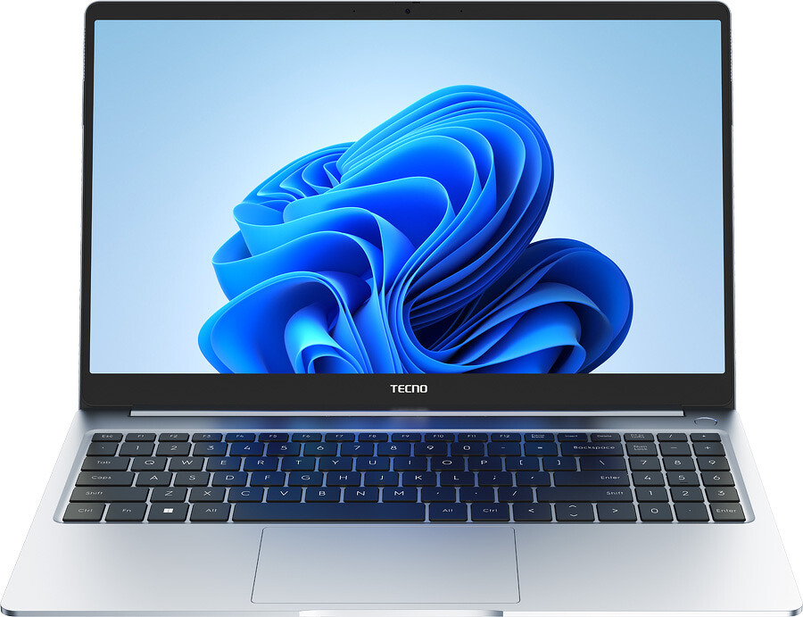
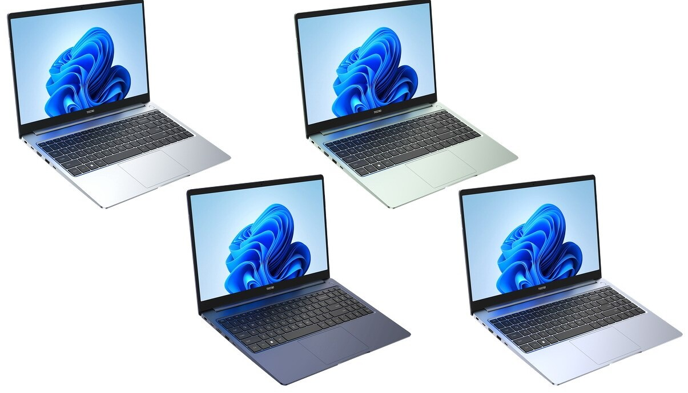

Китайский производитель смартфонов Tecno анонсировал свой первый ноутбук, получивший название Megabook T1. Как сообщили CNews представители Tecno, Россия станет одной из первых стран, в которых он поступит в продажу.
Megabook T1 – это полноразмерный ноутбук с экраном на 15,6 дюйма по диагонали, исполненный в тонком по современном меркам алюминиевом корпусе толщиной 14,8 мм. Вес лэптопа составляет 1,48 кг и приходится, по большей части, на аккумулятор, обеспечивающий ноутбуку до 17,5 часа интенсивной работы или до трех дней в режиме ожидания.
Ноутбук будет выпускаться в четырех оттенках корпуса. Сколько из будут доступны в России, пока неизвестно. Как сообщили CNews представители Tecno, на российском рынке Megabook T1 появится в течение осени 2022 г. Более точная дата пока не установлена, как и рекомендуемая розничная цена.

В России Tecno известна благодаря своим смартфонам, в том числе и дизайнерским. Как сообщал CNews, в августе 2022 г. ее доля на российском мобильном рынке взлетела до 7,5%. Для сравнения, у Samsung – 10,9%, у Apple – 9,7%. Бренд Tecno входит в холдинг Transsion. В 2020 г. Transsion попался на выпуске дешевых смартфонов под собственным брендом для стран третьего мира со встроенным вредоносным ПО, ворующим деньги и персональные у своих владельцев, попутно показывая рекламу.
Основной конкурент Tecno в России – это компания Xiaomi наряду со своим дочерним брендом Redmi. Обе компании тоже начинали со смартфонов, но позже стали выпускать и другую технику, в том числе и ноутбуки. На российском сайте Xiaomi они не представлены, но в официальной российской рознице они доступны для приобретения.
Гелсингер – это настоящий ветеран Intel с более чем 30-летним стажем, стоящий за многими ее наиважнейшими достижениями и разработками. Он был назначен на пост СЕО компании в январе 2021 г. после того, как ее едва не погубил Роберт Свон (Robert Swan), предыдущий гендиректор и бывший финансовый директор Intel. Весной 2021 г. Гелсингер анонсировал многолетнюю программу по поднятию Intel с колен, в которую, правда, не входили достижение дна на рынке серверных процессоров и громогласный уход из России.
То же касается и компании Realme, продукция которой очень востребована в России.

В своем первом ноутбуке Tecno не стала использовать платформу AMD или экспериментировать с процессорами на базе архитектуры ARM. Она отдала предпочтение чипам Intel 11 поколения (Tiger Lake).
По умолчанию Megabook T1 поставляется с Core i5-1155G7. Это процессор образца II квартала 2021 г., несущий в себе четыре ядра на частоте до 4,5 ГГц и способный обрабатывать до восьми потока инструкций (по два потока на ядро). Уровень тепловыделения (TDP) данного CPU равен 28 Вт, кэш третьего уровня – 8 МБ.
Опционально доступна модификация с более производительным Core i7-1195G7. При том же количестве ядер и потоков он выдает частоту 5 ГГц, но имеет идентичный Core i5-1155G7 TDP. Кэш-память L3 увеличена до 12 МБ.
Видеоподсистемы в обоих CPU одинаковые – это Intel Iris Xe, но в младшем процессоре ее частота равна 1,35 ГГц, в старшем – 1,4 ГГц. Дискретной графики в ноутбуке Tecno нет.
Дисплей Tecno Megabook T1 – это IPS-панель, обладающая стандартными для данного типа матриц углами обзора 178 градусов по вертикали и горизонтали. Производитель устанавливает в ноутбук экраны Full HD или 1920-1080 пикселей с пиковой яркостью. 350 нит.
Также заявлен 100-процентный охват цветового пространства sRGB. Помимо этого в наличии сертификат TUV Eye Comfort Certification, указывающий на минимальную нагрузку на глаза даже при длительной работе за ноутбуком.
За вывод звука в Megabook T1 отвечает фирменная акустическая система Tecno VOC, количество динамиков в которой не установлено. Производитель заявляет о поддержке технологии улучшения звука DTS наряду с алгоритмами искусственного интеллекта, нацеленными на то же.
Интерфейсов в ноутбуке много, но для Ethernet из-за минимальной толщины места не нашлось
Клавиатура ноутбука наделена встроенной подсветкой, а размеры корпуса позволили дополнить ее боком цифровых клавиш – NumPad. Все интерфейсные разъемы размещены на боковых торцах корпуса.
Megabook T1 предложит пользователю два порта USB-C и три полноразмерных USB-А. Также в наличии вход под наушники и слот под карты памяти, а вывод изображения на внешний дисплей обеспечивает HDMI.
Первый ноутбук Tecno работает под управлением новейшей ОС Windows 11. Производитель не заявляет об этом прямо, но, во-первых, лэптопы с Linux пользуются гораздо меньшим спросом, во-вторых, на экране Megabook T1 запечатлены фирменные «обои» новой системы Microsoft.